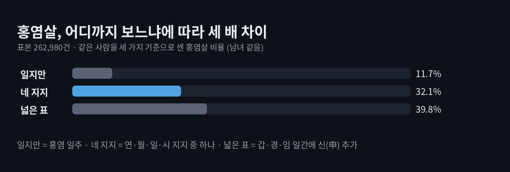
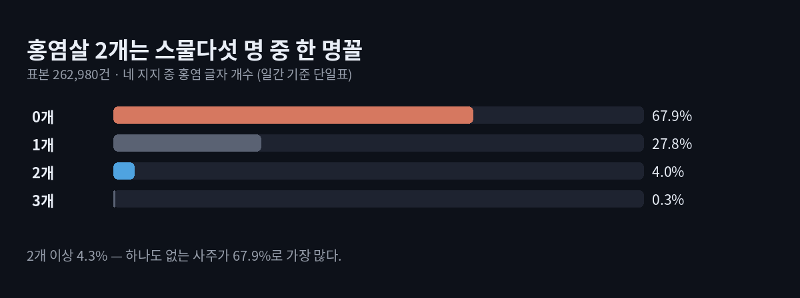
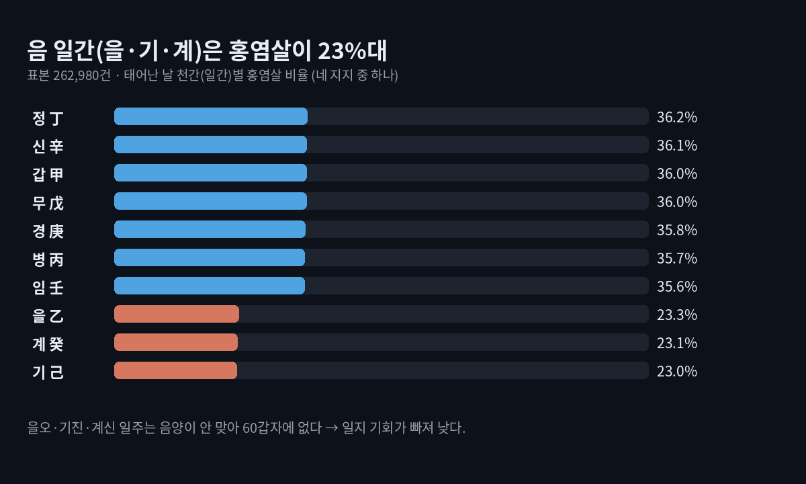

홍염살 여자에게 더 많을까? 26만 사주로 센 비율 32.1%
이 포스팅은 쿠팡 파트너스 활동의 일환으로, 이에 따른 일정액의 수수료를 제공받습니다.
홍염살 여자에게 더 많다는 말이 있지만, 26만 사주를 세어 보면 남녀 비율은 똑같습니다. 네 지지 가운데 하나라도 홍염 글자가 있는 사주는 32.1%, 세 명 중 한 명꼴입니다.
홍염살(紅艶殺)은 '붉을 홍, 고울 염' — 붉게 피어나는 매력의 기운으로 풀곤 하는 신살입니다. 태어난 날의 천간인 일간에 따라 홍염으로 보는 지지가 하나씩(일부는 둘) 정해집니다. 풀이 글 다섯 곳을 읽어 보니 여자 편에 설명이 더 길고, '여자에게 더 강하다'는 말도 보였습니다. 그런데 몇 %가 가진 살인지, 남녀가 다른지 숫자로 답한 곳은 없었습니다. 그래서 현침살 때처럼 엔진으로 하나하나 세었습니다.
결론부터
- 기준에 따라 11.7% → 32.1% → 39.8%로 세 배 넘게 갈립니다.
- 여자·남자는 사주 여덟 글자 계산에 들어가지 않습니다. 같은 날 같은 시에 태어나면 홍염살 여부도 같습니다.
- 홍염 글자가 2개 이상인 사주는 4.3%로 드뭅니다.
- 일간이 음(을·기·계)이면 23%대, 양이면 36% 안팎으로 차이가 납니다.

홍염살 보는 법은 표가 두 가지다
가장 흔한 표는 일간 하나에 지지 하나를 짝짓습니다. 일부 풀이는 갑·경·임 일간에 신(申)을 더한 넓은 표를 씁니다.
| 일간 | 갑 | 을 | 병 | 정 | 무 | 기 | 경 | 신 | 임 | 계 |
|---|---|---|---|---|---|---|---|---|---|---|
| 홍염 지지 | 오 | 오 | 인 | 미 | 진 | 진 | 술 | 유 | 자 | 신 |
| 넓은 표에 추가 | 신 | 신 | 신 |
같은 사람들을 세 가지로 셌습니다.
| 기준 | 홍염살이 있다고 보는 경우 | 비율 |
|---|---|---|
| 기준1 | 일지(태어난 날의 지지)가 홍염 글자 | 11.7% |
| 기준2 | 연·월·일·시 네 지지 중 하나라도 | 32.1% |
| 기준3 | 기준2에 넓은 표(갑·경·임 + 신)까지 | 39.8% |
이 글의 개수·일간·달 숫자는 기준2로 셌습니다.
- 표본: 1950년부터 2009년까지 하루도 빼지 않고, 하루를 12시진으로 나눠 만든 262,980건
- 다시 확인: 1890~1949년생 262,968건에서도 11.7% · 32.0% · 39.6%로 거의 같았습니다
- 손 계산: 일지 기준은 60갑자 중 홍염 일주 7개라 7/60 = 11.7%로 엔진과 정확히 맞습니다
입력값은 브라우저 안에서만 계산되고 어디로도 전송되지 않습니다.
이 포스팅은 쿠팡 파트너스 활동의 일환으로, 이에 따른 일정액의 수수료를 제공받습니다.
홍염살 여자에게 더 많을까?
아닙니다. 사주 여덟 글자는 태어난 해·달·날·시만으로 정해지고, 성별은 그 계산 어디에도 들어가지 않습니다. 같은 생시를 가진 여자와 남자는 홍염살 여부도, 개수도 똑같습니다. 성별이 쓰이는 곳은 대운이 앞으로 도는지 거꾸로 도는지 정할 때입니다. 원국(타고난 여덟 글자)에 홍염 글자가 있느냐는 그와 무관합니다. '여자에게 더 강하다'는 말은 계산이 아니라 해석의 몫입니다.
홍염살 2개, 얼마나 드물까?
네 지지 중 홍염 글자 개수를 세면 이렇게 나뉩니다.

- 하나도 없는 사주가 67.9%로 가장 많습니다.
- 딱 2개는 4.0%, 3개는 0.3%입니다. 현침살 2개가 절반을 넘었던 것과 달리, 홍염살 2개는 스물다섯 명 중 한 명꼴입니다.
- 자리별로는 일지 11.7%가 가장 높고, 연지·월지·시지는 8.3~8.4%로 비슷합니다.
일간이 음이면 왜 낮을까

60갑자는 양 천간엔 양 지지, 음 천간엔 음 지지만 붙입니다. 을(乙)의 짝 오(午), 기(己)의 짝 진(辰), 계(癸)의 짝 신(申)은 모두 양의 지지라, 음의 일간 아래 일지로 올 수 없습니다. 그래서 을오·기진·계신 일주는 60갑자에 없고, 이 세 일간은 나머지 세 지지에서만 기회가 생깁니다.
- 양 일간 일곱은 35.6~36.2%, 음 일간 셋은 23.0~23.3%입니다.
- 넓은 표를 쓰면 갑 62.4%·경 60.9%·임 61.1%로 뛰어오릅니다. 신(申)이 일지로 올 수 있는 일간들입니다.
태어난 달도 숫자를 흔듭니다. 월지(태어난 달의 지지)가 진(辰)인 양력 4월이 39.6%, 오(午)인 6월이 38.8%로 높고, 월지가 홍염 표에 없는 3월(묘월)은 26.4%로 가장 낮습니다. 달마다 신살 비율이 출렁이는 모습은 도화살 빈도에서도 확인됩니다.
한계
- 이 계산은 홍염 글자의 등장 횟수만 셉니다. 그 글자가 실제 매력이나 연애로 이어지는지는 알려 주지 않습니다.
- 지장간·대운·세운으로 들어오는 홍염, 연간을 기준으로 보는 풀이는 넣지 않았습니다.
- 날짜·시진마다 태어나는 사람 수가 같다고 가정했습니다. 절기가 바뀌는 날 앞뒤로는 월지가 하루쯤 어긋날 수 있습니다.
- 시지도 네 자리 중 하나라 생시를 모르면 결과가 달라집니다. 태어난 시각이 결과를 얼마나 바꾸는지도 함께 보세요.
내 홍염살은 어디에 있을까
홍염살이 있다면 세 명 중 한 명과 같은 자리에 있다고 보면 됩니다. 여자라서 더 세게 나타난다고 볼 계산상의 근거는 없습니다. 개수보다 어느 자리에 놓였는지 — 일지인지, 시지인지 — 까지 살펴야 풀이가 비로소 내 사주의 이야기가 된다고 봅니다.
가볍게 즐기는 콘텐츠입니다. 위 숫자는 홍염살 글자가 사주에 나타나는 빈도이며, 성격·매력·연애나 앞날을 판단하거나 보장하지 않습니다.